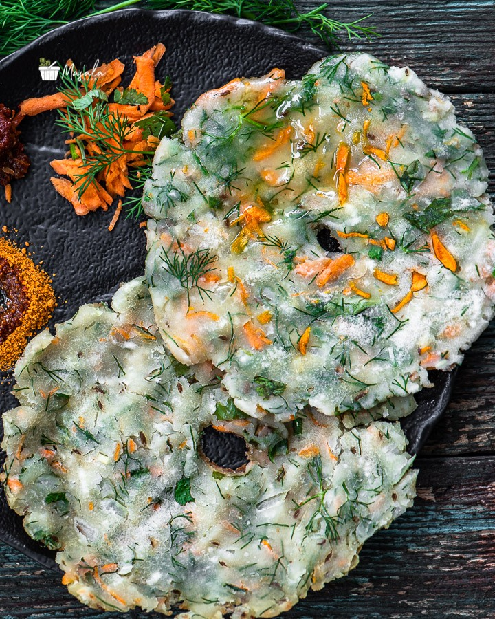

Akki Roti Recipe

Ingredients
- 2 Cups Rice Flour Fine Variety
- 1 tsp Salt Adjust to taste
- 1/4 Cup Dill Leaves Finely chopped
- 1/4 Cup Carrot Grated
- 1 Medium Onion Finely chopped
- 1 tbsp Coriander Finely chopped
- Few Curry Leaves Finely chopped
- 2 to 3 Green Chillies Finely chopped
- 1 inch Ginger Grated
- 1/4 Cup Fresh Coconut Shredded
- 1 tsp Cumin Seeds
- Water as required
- Oil as needed for cooking Roti
Instructions
LET'S MAKE THE DOUGH:
- To a large bowl, add 2 cups rice flour.
- Mix thoroughly until the onions release moisture.
- Gradually add about ¾ cup of water while mixing until a soft, pliable dough forms.
- Cover the dough and let it rest for at least 20 minutes.
- Cover and cook until the eggs are done to your liking.
- Cook until golden on both sides.